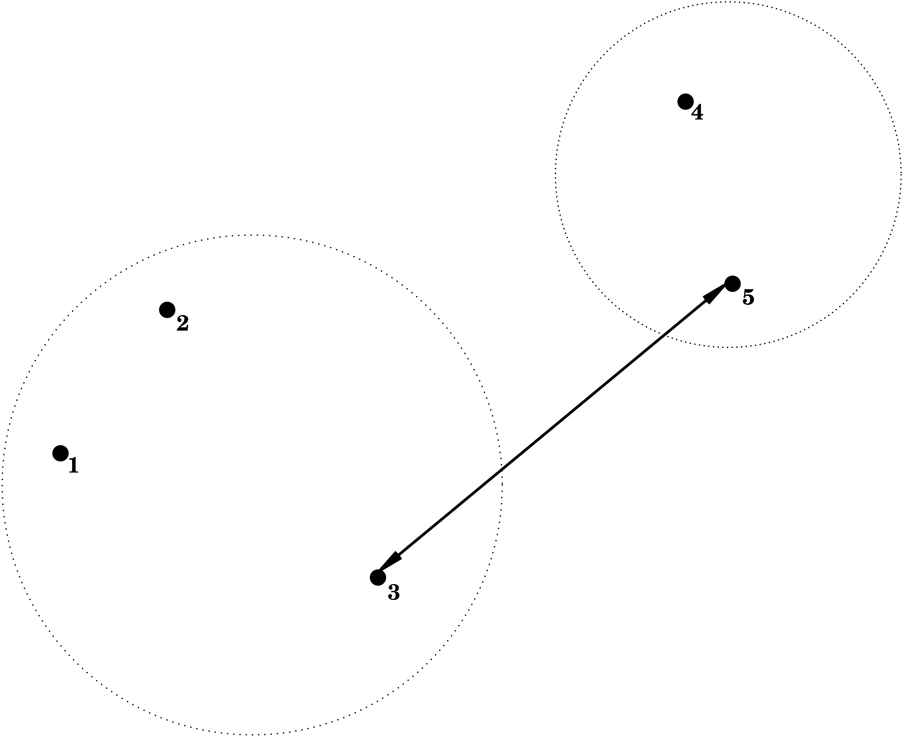
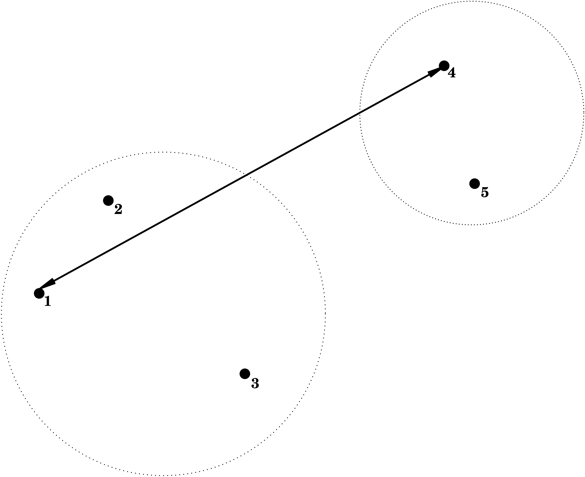
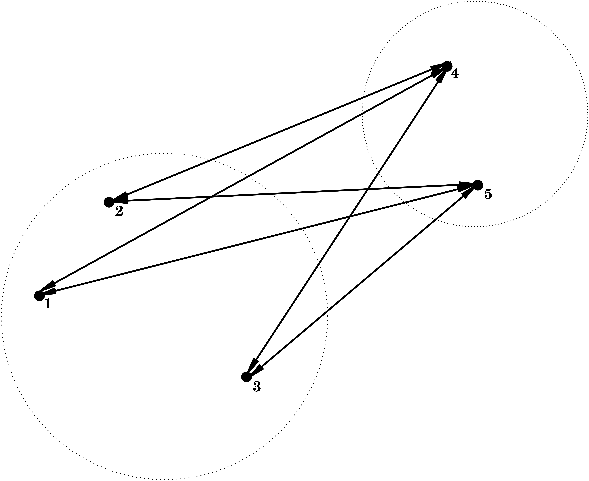
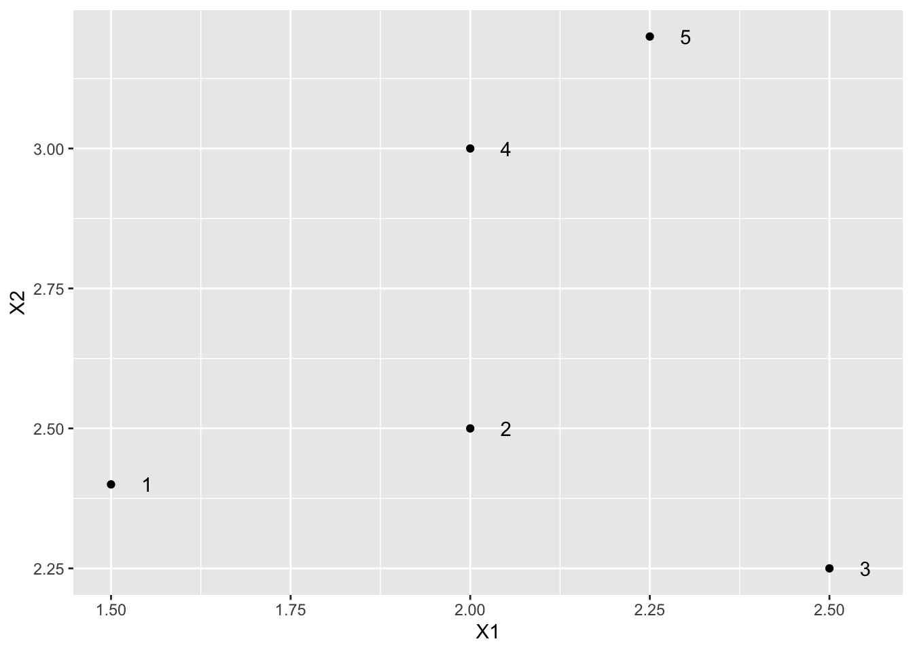
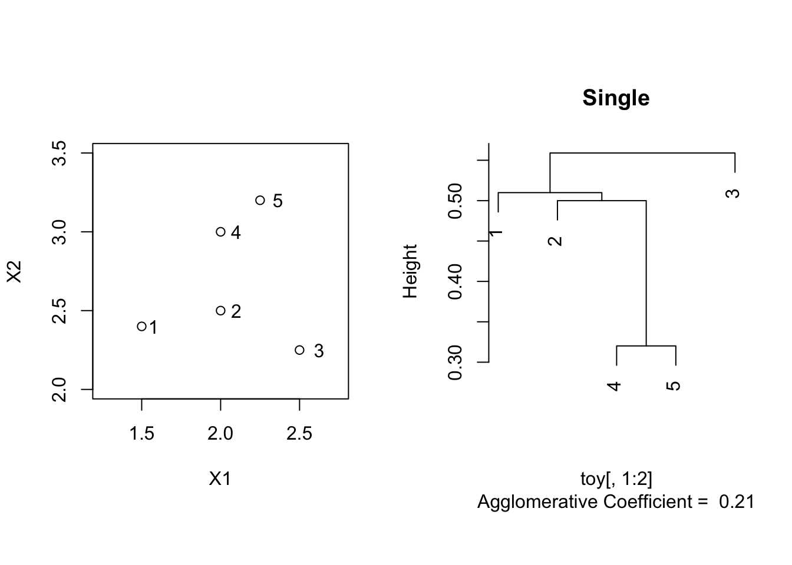
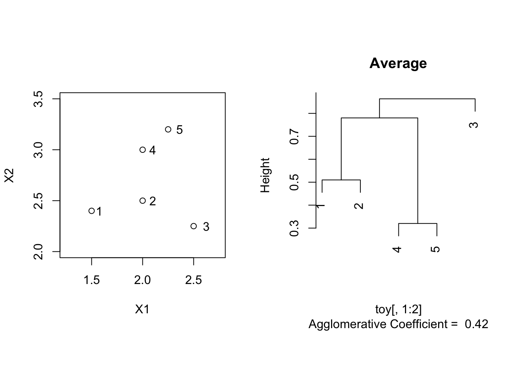

Introduction
Objective
Objective: grouping of observations into clusters, so that
- similar observations appear in the same cluster
- dissimilar observations appear in distinct clusters
\(\longrightarrow\) need for a measure for similarity and dissimilarity?
Example 1
Single cell transcriptomics: \(n \times p\) Matrix for which - every column contains the expression levels of one of \(p\) genes for \(n\) cells - every row contains the expression levels of \(p\) genes for one cell ({})
Research question: look for groups of cells that have similar gene expression patterns
Or, look for groups of genes that have similar expression levels across the different cells. This can help us in understanding the regulation and functionality of the genes.
\(\longrightarrow\) both observations (rows) and variables (columns) can be clustered
Example 2.
Abundance studies: the abundances of \(n\) plant species are counted on \(p\) plots (habitats)
- look for groups that contain species that live in the same habitats, or, look for groups of habitats that have similar species communities
\(\longrightarrow\) both observations (rows) and variables (columns) can be clustered
Hierarchical Cluster Analysis: Agnes
General Algorithm
In step 0 the intercluster dissimilarity coincides with the dissimilarity between the corresponding observations \ \(\leftrightarrow\) intercluster dissimilarity?
Intercluster Dissimilarities
Represent clusters (e.g. \(C_1\) and \(C_2\)) as sets of points \(\mathbf{x}_i\) which belong to that cluster
\(d(C_1,C_2)\): intercluster dissimilarity between
We consider three intercluster dissimilarities.
Single Linkage = Nearest Neighbour
\[
d(C_1,C_2) = \min_{\mathbf{x}_1 \in C_1; \mathbf{x}_2 \in C_2}
d(\mathbf{x}_1,\mathbf{x}_2) ,
\]
i.e. the dissimilarity between \(C_1\) and \(C_2\) is determined by the smallest dissimilarity between a point of \(C_1\) and a point of \(C_2\).

Complete Linkage = Furthest Neighbour
\[
d(C_1,C_2) = \max_{\mathbf{x}_1 \in C_1; \mathbf{x}_2 \in C_2}
d(\mathbf{x}_1,\mathbf{x}_2) ,
\] i.e. the dissimilarity between \(C_1\) and \(C_2\) is determined by the largest dissimilarity between a point of \(C_1\) and a point of \(C_2\).

Average Linkage = Group Average
\[
d(C_1,C_2) = \frac{1}{\vert C_1 \vert \vert C_2 \vert}
\sum_{\mathbf{x}_1 \in C_1; \mathbf{x}_2 \in C_2}
d(\mathbf{x}_1,\mathbf{x}_2) ,
\] i.e. the dissimilarity between \(C_1\) and \(C_2\) is determined by the average dissimilarity between all points of \(C_1\) and all points of \(C_2\).

Cluster Tree
Hierarchical nature of the algorithm:
Nested sequence of clusters \(\longrightarrow\) visualisation via a tree
height of branches indicate the intercluster dissimilarity at which clusters are merged.
Can used as instrument for deciding the number of clusters in the data
Toy example
| 1.50 |
2.40 |
1 |
| 2.00 |
2.50 |
2 |
| 2.50 |
2.25 |
3 |
| 2.00 |
3.00 |
4 |
| 2.25 |
3.20 |
5 |
library(cluster)
library(tidyverse)
toy %>%
ggplot(aes(X1, X2, label = label)) +
geom_point() +
geom_text(nudge_x = .05)

## 1 2 3 4
## 2 0.5099020
## 3 1.0111874 0.5590170
## 4 0.7810250 0.5000000 0.9013878
## 5 1.0965856 0.7433034 0.9823441 0.3201562
Single linkage
toySingle <- agnes(toy[,1:2], method = "single")
par(mfrow=c(1,2),pty="s")
plot(X2 ~ X1, toy, xlim = c(1.25,2.75),ylim = c(2,3.5))
text(toy$X1*1.05,toy$X2,label=toy$label)
plot(toySingle, which.plot = 2, main = "Single")

## 1 2 3 4
## 2 0.5099020
## 3 1.0111874 0.5590170
## 4 0.7810250 0.5000000 0.9013878
## 5 1.0965856 0.7433034 0.9823441 0.3201562
Complete linkage
toyComplete <- agnes(toy[,1:2], method = "complete")
par(mfrow=c(1,2),pty="s")
plot(X2 ~ X1, toy, xlim = c(1.25,2.75),ylim = c(2,3.5))
text(toy$X1*1.05,toy$X2,label=toy$label)
plot(toyComplete, which.plot = 2, main = "Complete")

## 1 2 3 4
## 2 0.5099020
## 3 1.0111874 0.5590170
## 4 0.7810250 0.5000000 0.9013878
## 5 1.0965856 0.7433034 0.9823441 0.3201562
Average linkage
toyAvg <- agnes(toy[,1:2], method = "average")
par(mfrow=c(1,2),pty="s")
plot(X2 ~ X1, toy, xlim = c(1.25,2.75),ylim = c(2,3.5))
text(toy$X1*1.05,toy$X2,label=toy$label)
plot(toyAvg, which.plot = 2, main = "Average")

## 1 2 3 4
## 2 0.5099020
## 3 1.0111874 0.5590170
## 4 0.7810250 0.5000000 0.9013878
## 5 1.0965856 0.7433034 0.9823441 0.3201562
LS0tCnRpdGxlOiAiSW50cm9kdWN0aW9uIHRvIEhpZXJhcmNoaWNhbCBDbHVzdGVyaW5nIgphdXRob3I6ICJMaWV2ZW4gQ2xlbWVudCIKb3V0cHV0OgogIGh0bWxfZG9jdW1lbnQ6CiAgICBkZl9wcmludDogcGFnZWQKICBwZGZfZG9jdW1lbnQ6CiAgICB0b2M6IHRydWUKICAgIG51bWJlcl9zZWN0aW9uczogdHJ1ZQotLS0KCiMgSW50cm9kdWN0aW9uCiMjIE9iamVjdGl2ZQoKT2JqZWN0aXZlOiBncm91cGluZyBvZiBvYnNlcnZhdGlvbnMgaW50byAqKmNsdXN0ZXJzKiosIHNvIHRoYXQKCi0gc2ltaWxhciBvYnNlcnZhdGlvbnMgYXBwZWFyIGluIHRoZSBzYW1lIGNsdXN0ZXIKLSBkaXNzaW1pbGFyIG9ic2VydmF0aW9ucyBhcHBlYXIgaW4gZGlzdGluY3QgY2x1c3RlcnMKCiRcbG9uZ3JpZ2h0YXJyb3ckIG5lZWQgZm9yIGEgbWVhc3VyZSBmb3IgKipzaW1pbGFyaXR5KiogYW5kICoqZGlzc2ltaWxhcml0eSoqPwoKCiMjIEV4YW1wbGUgMQoKU2luZ2xlIGNlbGwgdHJhbnNjcmlwdG9taWNzOiAgJG4gXHRpbWVzIHAkIE1hdHJpeCBmb3Igd2hpY2gKICAtIGV2ZXJ5IGNvbHVtbiBjb250YWlucyB0aGUgZXhwcmVzc2lvbiBsZXZlbHMgb2Ygb25lIG9mICRwJCBnZW5lcyBmb3IgJG4kIGNlbGxzCiAgLSBldmVyeSByb3cgY29udGFpbnMgdGhlIGV4cHJlc3Npb24gbGV2ZWxzIG9mICRwJCBnZW5lcyBmb3Igb25lIGNlbGwgKHtcZW0gc2FtcGxlfSkKCiAgLSBSZXNlYXJjaCBxdWVzdGlvbjogbG9vayBmb3IgZ3JvdXBzIG9mIGNlbGxzIHRoYXQgaGF2ZSBzaW1pbGFyIGdlbmUgZXhwcmVzc2lvbiBwYXR0ZXJucwoKIC0gT3IsIGxvb2sgZm9yIGdyb3VwcyBvZiBnZW5lcyB0aGF0IGhhdmUgc2ltaWxhciBleHByZXNzaW9uIGxldmVscyBhY3Jvc3MgdGhlIGRpZmZlcmVudCBjZWxscy4gVGhpcyBjYW4KIGhlbHAgdXMgaW4gdW5kZXJzdGFuZGluZyB0aGUgcmVndWxhdGlvbiBhbmQgZnVuY3Rpb25hbGl0eSBvZiB0aGUgZ2VuZXMuCgogJFxsb25ncmlnaHRhcnJvdyQgYm90aCAqKm9ic2VydmF0aW9ucyoqIChyb3dzKSBhbmQgKip2YXJpYWJsZXMqKiAoY29sdW1ucykgY2FuIGJlIGNsdXN0ZXJlZAoKCiMjIEV4YW1wbGUgMi4KCkFidW5kYW5jZSBzdHVkaWVzOiB0aGUgYWJ1bmRhbmNlcyBvZiAkbiQgcGxhbnQgc3BlY2llcyBhcmUgY291bnRlZCBvbiAkcCQgcGxvdHMgKGhhYml0YXRzKQoKICAtIGxvb2sgZm9yIGdyb3VwcyB0aGF0IGNvbnRhaW4gc3BlY2llcyB0aGF0IGxpdmUgaW4gdGhlIHNhbWUgaGFiaXRhdHMsIG9yLCBsb29rIGZvciBncm91cHMgb2YKIGhhYml0YXRzIHRoYXQgaGF2ZSBzaW1pbGFyIHNwZWNpZXMgY29tbXVuaXRpZXMKCiRcbG9uZ3JpZ2h0YXJyb3ckIGJvdGggKipvYnNlcnZhdGlvbnMqKiAocm93cykgYW5kICoqdmFyaWFibGVzKiogKGNvbHVtbnMpIGNhbiBiZSBjbHVzdGVyZWQKCgojIEhpZXJhcmNoaWNhbCBDbHVzdGVyIEFuYWx5c2lzOiBBZ25lcwoKIyMgR2VuZXJhbCBBbGdvcml0aG0KCi0gSW4gc3RlcCAwIGVhY2ggb2JzZXJ2YXRpb25zIGlzIGNvbnNpZGVyZWQgYXMgYSBjbHVzdGVyIChpLmUuICRuJCBjbHVzdGVycykuCgotIEV2ZXJ5IG5leHQgc3RlcCBjb25zaXN0cyBvZjoKCiAgIDEuIG1lcmdlIHRoZSB0d28gY2x1c3RlcnMgd2l0aCB0aGUgc21hbGxlc3QgaW50ZXJjbHVzdGVyIGRpc3NpbWlsYXJpdHkKICAgMi4gcmVjYWxjdWxhdGUgdGhlIGludGVyY2x1c3RlciBkaXNzaW1pbGFyaXRpZXMKCkluIHN0ZXAgMCB0aGUgaW50ZXJjbHVzdGVyIGRpc3NpbWlsYXJpdHkgY29pbmNpZGVzIHdpdGggdGhlIGRpc3NpbWlsYXJpdHkgYmV0d2VlbiB0aGUgY29ycmVzcG9uZGluZyBvYnNlcnZhdGlvbnMgXFwKICAkXGxlZnRyaWdodGFycm93JCBpbnRlcmNsdXN0ZXIgZGlzc2ltaWxhcml0eT8KCiMjIEludGVyY2x1c3RlciBEaXNzaW1pbGFyaXRpZXMKCi0gUmVwcmVzZW50IGNsdXN0ZXJzIChlLmcuICRDXzEkIGFuZCAkQ18yJCkKICAgYXMgc2V0cyBvZiBwb2ludHMgJFxtYXRoYmZ7eH1faSQgd2hpY2ggYmVsb25nIHRvIHRoYXQgY2x1c3RlcgoKLSAkZChDXzEsQ18yKSQ6IGludGVyY2x1c3RlciBkaXNzaW1pbGFyaXR5IGJldHdlZW4KCldlIGNvbnNpZGVyIHRocmVlIGludGVyY2x1c3RlciBkaXNzaW1pbGFyaXRpZXMuCgojIyMgU2luZ2xlIExpbmthZ2UgPSBOZWFyZXN0IE5laWdoYm91cgoKXFsKICBkKENfMSxDXzIpID0gXG1pbl97XG1hdGhiZnt4fV8xIFxpbiBDXzE7IFxtYXRoYmZ7eH1fMiBcaW4gQ18yfQogIGQoXG1hdGhiZnt4fV8xLFxtYXRoYmZ7eH1fMikgLApcXQoKaS5lLiB0aGUgZGlzc2ltaWxhcml0eSBiZXR3ZWVuICRDXzEkIGFuZCAkQ18yJCBpcyBkZXRlcm1pbmVkIGJ5IHRoZSBzbWFsbGVzdCBkaXNzaW1pbGFyaXR5IGJldHdlZW4gYSBwb2ludCBvZiAkQ18xJCBhbmQgYSBwb2ludCBvZiAkQ18yJC4KCmBgYHtyLCBlY2hvPUZBTFNFLCBvdXQud2lkdGg9JzcwJSd9CmtuaXRyOjppbmNsdWRlX2dyYXBoaWNzKCJhc3NldHMvaGNsdXN0TmVhcmVzdC5wbmciKQpgYGAKCiMjIyBDb21wbGV0ZSBMaW5rYWdlID0gRnVydGhlc3QgTmVpZ2hib3VyCiAgIFxbCiAgICBkKENfMSxDXzIpID0gXG1heF97XG1hdGhiZnt4fV8xIFxpbiBDXzE7IFxtYXRoYmZ7eH1fMiBcaW4gQ18yfQogICAgZChcbWF0aGJme3h9XzEsXG1hdGhiZnt4fV8yKSAsCiAgIFxdCiAgIGkuZS4gdGhlIGRpc3NpbWlsYXJpdHkgYmV0d2VlbiAkQ18xJCBhbmQgJENfMiQgaXMgZGV0ZXJtaW5lZCBieSB0aGUgbGFyZ2VzdCBkaXNzaW1pbGFyaXR5IGJldHdlZW4gYSBwb2ludCBvZiAkQ18xJCBhbmQgYQogICBwb2ludCBvZiAkQ18yJC4KCgpgYGB7ciwgZWNobz1GQUxTRSwgb3V0LndpZHRoPSc3MCUnfQprbml0cjo6aW5jbHVkZV9ncmFwaGljcygiYXNzZXRzL2hjbHVzdEZ1cnRoZXN0LnBuZyIpCmBgYAoKIyMjIEF2ZXJhZ2UgTGlua2FnZSA9IEdyb3VwIEF2ZXJhZ2UKCiAgIFxbCiAgICBkKENfMSxDXzIpID0gXGZyYWN7MX17XHZlcnQgQ18xIFx2ZXJ0IFx2ZXJ0IENfMiBcdmVydH0KICAgIFxzdW1fe1xtYXRoYmZ7eH1fMSBcaW4gQ18xOyBcbWF0aGJme3h9XzIgXGluIENfMn0KICAgIGQoXG1hdGhiZnt4fV8xLFxtYXRoYmZ7eH1fMikgLAogICBcXQogICBpLmUuIHRoZSBkaXNzaW1pbGFyaXR5IGJldHdlZW4gJENfMSQgYW5kICRDXzIkIGlzIGRldGVybWluZWQgYnkgdGhlIGF2ZXJhZ2UgZGlzc2ltaWxhcml0eSBiZXR3ZWVuIGFsbCBwb2ludHMgb2YgJENfMSQgYW5kIGFsbAogICBwb2ludHMgb2YgJENfMiQuCgpgYGB7ciwgZWNobz1GQUxTRSwgb3V0LndpZHRoPSc3MCUnfQprbml0cjo6aW5jbHVkZV9ncmFwaGljcygiYXNzZXRzL2hjbHVzdEF2ZXJhZ2UucG5nIikKYGBgCgoKIyMgQ2x1c3RlciBUcmVlCgpIaWVyYXJjaGljYWwgbmF0dXJlIG9mIHRoZSBhbGdvcml0aG06CgotIE5lc3RlZCBzZXF1ZW5jZSBvZiBjbHVzdGVycyAkXGxvbmdyaWdodGFycm93JCB2aXN1YWxpc2F0aW9uIHZpYSBhIHRyZWUgIAoKCi0gaGVpZ2h0IG9mIGJyYW5jaGVzIGluZGljYXRlIHRoZSBpbnRlcmNsdXN0ZXIgZGlzc2ltaWxhcml0eSBhdCB3aGljaCBjbHVzdGVycyBhcmUgbWVyZ2VkLgoKLSBDYW4gdXNlZCBhcyBpbnN0cnVtZW50IGZvciBkZWNpZGluZyB0aGUgbnVtYmVyIG9mIGNsdXN0ZXJzIGluIHRoZSBkYXRhCgoKIyBUb3kgZXhhbXBsZQoKCmBgYHtyIGVjaG8gPSBGQUxTRX0KdG95IDwtIGRhdGEuZnJhbWUoCiAgWDEgPSBjKDEuNTAsCiAgICAgICAgIDIuMDAsCiAgICAgICAgIDIuNTAsCiAgICAgICAgIDIuMDAsCiAgICAgICAgIDIuMjUpLAogIFgyID0gYygyLjQwLAogICAgICAgICAyLjUwLAogICAgICAgICAyLjI1LAogICAgICAgICAzLjAwLAogICAgICAgICAzLjIwKSwKICBsYWJlbCA9IDE6NQogICkKCmtuaXRyOjprYWJsZSh0b3kpCmBgYAoKYGBge3J9CmxpYnJhcnkoY2x1c3RlcikKbGlicmFyeSh0aWR5dmVyc2UpCgp0b3kgJT4lCiAgZ2dwbG90KGFlcyhYMSwgWDIsIGxhYmVsID0gbGFiZWwpKSArCiAgZ2VvbV9wb2ludCgpICsKICBnZW9tX3RleHQobnVkZ2VfeCA9IC4wNSkKCnRveVssMToyXSAlPiUgZGlzdApgYGAKCiMjIFNpbmdsZSBsaW5rYWdlCgpgYGB7cn0KdG95U2luZ2xlIDwtIGFnbmVzKHRveVssMToyXSwgbWV0aG9kID0gInNpbmdsZSIpCnBhcihtZnJvdz1jKDEsMikscHR5PSJzIikKcGxvdChYMiB+IFgxLCB0b3ksIHhsaW0gPSBjKDEuMjUsMi43NSkseWxpbSA9IGMoMiwzLjUpKQp0ZXh0KHRveSRYMSoxLjA1LHRveSRYMixsYWJlbD10b3kkbGFiZWwpCnBsb3QodG95U2luZ2xlLCB3aGljaC5wbG90ID0gMiwgbWFpbiA9ICJTaW5nbGUiKQp0b3lbLDE6Ml0gJT4lIGRpc3QKYGBgCgojIyBDb21wbGV0ZSBsaW5rYWdlCgpgYGB7cn0KdG95Q29tcGxldGUgPC0gYWduZXModG95WywxOjJdLCBtZXRob2QgPSAiY29tcGxldGUiKQpwYXIobWZyb3c9YygxLDIpLHB0eT0icyIpCnBsb3QoWDIgfiBYMSwgdG95LCB4bGltID0gYygxLjI1LDIuNzUpLHlsaW0gPSBjKDIsMy41KSkKdGV4dCh0b3kkWDEqMS4wNSx0b3kkWDIsbGFiZWw9dG95JGxhYmVsKQpwbG90KHRveUNvbXBsZXRlLCB3aGljaC5wbG90ID0gMiwgbWFpbiA9ICJDb21wbGV0ZSIpCnRveVssMToyXSAlPiUgZGlzdApgYGAKCiMjIEF2ZXJhZ2UgbGlua2FnZQoKYGBge3J9CnRveUF2ZyA8LSBhZ25lcyh0b3lbLDE6Ml0sIG1ldGhvZCA9ICJhdmVyYWdlIikKcGFyKG1mcm93PWMoMSwyKSxwdHk9InMiKQpwbG90KFgyIH4gWDEsIHRveSwgeGxpbSA9IGMoMS4yNSwyLjc1KSx5bGltID0gYygyLDMuNSkpCnRleHQodG95JFgxKjEuMDUsdG95JFgyLGxhYmVsPXRveSRsYWJlbCkKcGxvdCh0b3lBdmcsIHdoaWNoLnBsb3QgPSAyLCBtYWluID0gIkF2ZXJhZ2UiKQp0b3lbLDE6Ml0gJT4lIGRpc3QKYGBgCg==